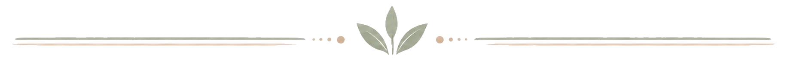
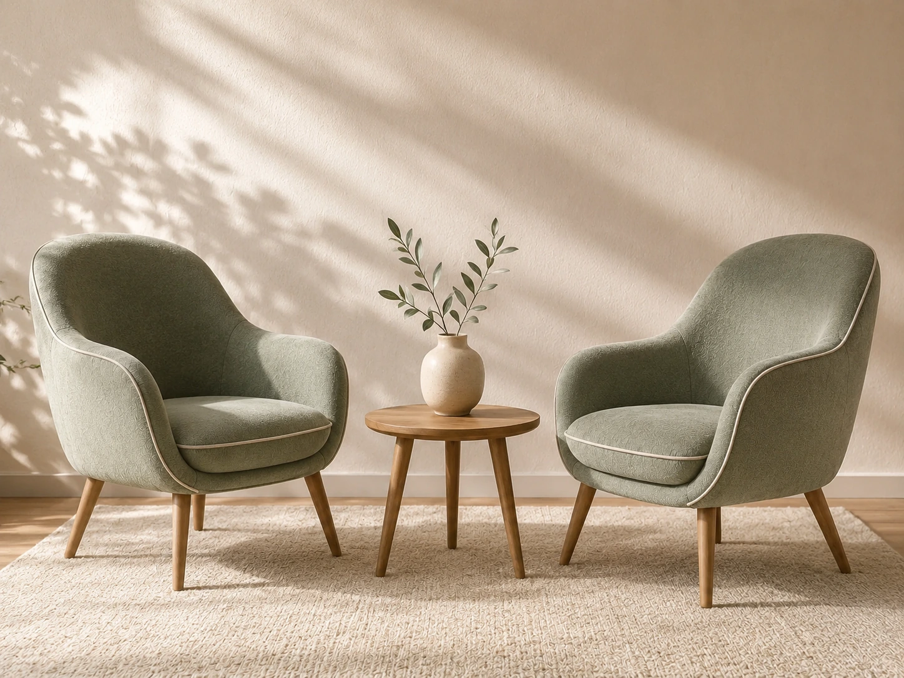
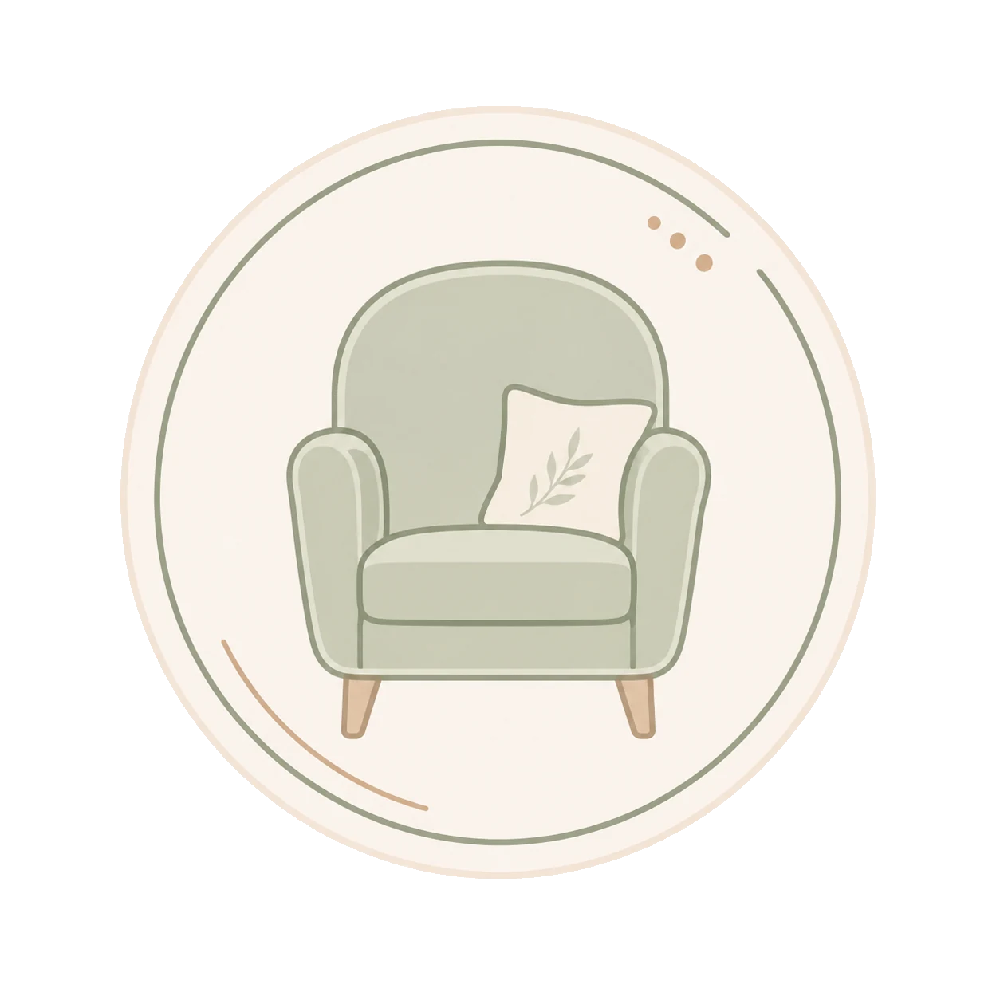

Not sure where to start?
You can begin with a muddle, a silence or one thing that keeps looping. It does not need to come out perfectly.
Meet Lynne
The Listening Space is for people who need room to think out loud. No performance, no neat explanation and no pressure to have the right words.

You can begin with a muddle, a silence or one thing that keeps looping. It does not need to come out perfectly.
Meet Lynne
Two chairs, steady attention and time to notice what usually gets rushed past.
Start with a messageA simple first meeting to talk about what has brought you here, what you need and whether this feels like the right fit.
Ask about a sessionMeet your counsellor
Lynne works in a gentle, grounded way. Sessions are not about being analysed, fixed or told what to do. They are about slowing things down enough to hear yourself more clearly.
Send Lynne a messageYou do not need a polished story before getting in touch. A few honest lines about what is happening is enough.